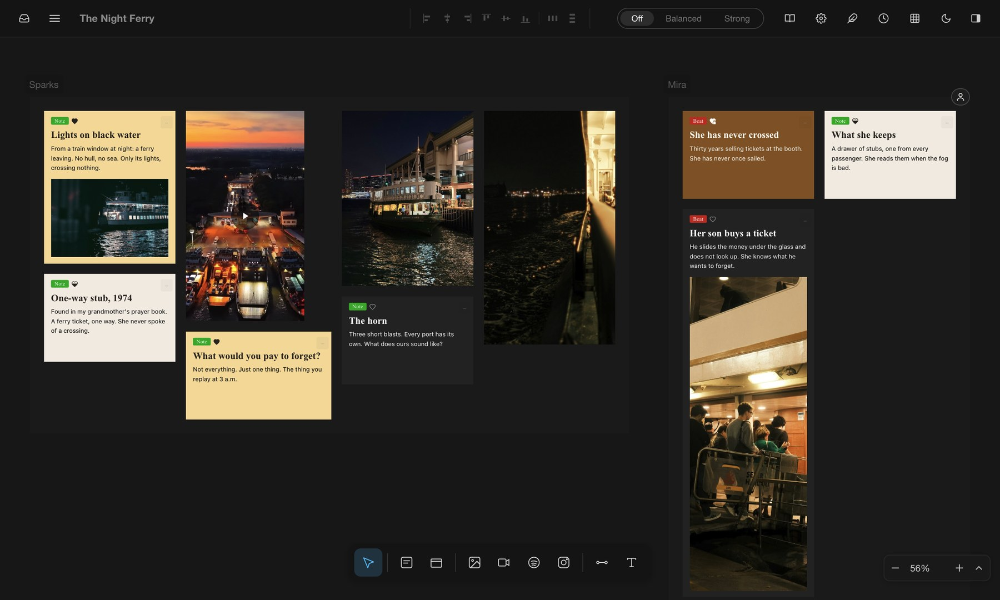
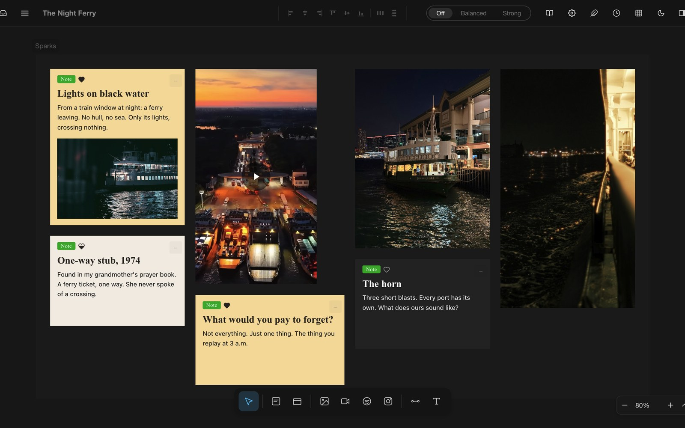
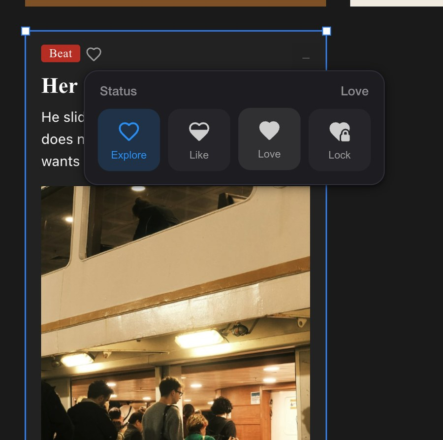
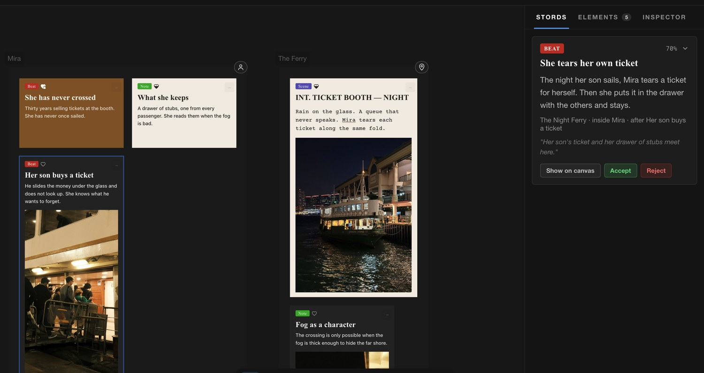

The blank page was never empty. It's a photograph you can't stop looking at, a sound, a memory, a question at 3 a.m. A story develops when sparks meet, and more keep coming. Stowsky is the space where they connect, grow, and become a fully developed story.
Request access
Bring in what moves you: photos, Instagram reels, YouTube, songs, sounds, a line you wrote at 3 a.m. Put it anywhere, move it around, gather it into frames. No templates. No order you have to follow.

Every card has a heart. Fill it as an idea earns its place, and see at a glance what is working.

Stowsky knows your taste, your preferences and your whole story: every spark, every heart, the films you love, the ideas you dropped. So when you ask, its suggestions fit. Keep what lands. Reject the rest.

An image, a song, a memory. We'll give you the space to grow it into a story.
Request accessWe'll send your access to soon. Until then, keep collecting sparks.